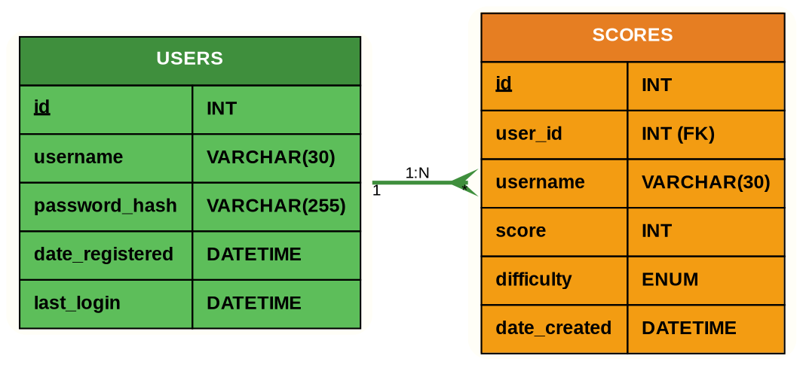
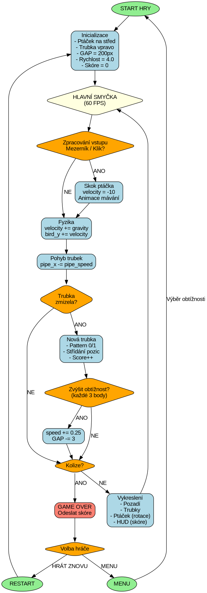
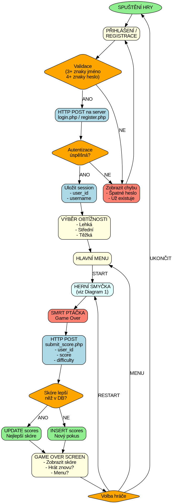

/// MATURITNÍ PROJEKT ///
Flappy Palach je komplexní demonstrace moderních webových technologií spojených s desktopovou aplikací. Projekt zahrnuje klientskou hru v Pythonu, RESTful API backend v PHP, relační databázi MySQL a responzivní frontend s autentizačním systémem.

Systém ukládá pouze nejlepší skóre pro každého uživatele na každé obtížnosti. Při nové hře server porovná skóre s existujícím rekordem – pokud je nové skóre vyšší, starý záznam se smaže a uloží se nový. Tím je zajištěno, že žebříček zobrazuje skutečné TOP výkony bez duplicit.
Vizuální znázornění klíčových procesů v aplikaci. Tyto diagramy slouží k rychlému pochopení logiky hry a komunikace mezi komponentami.
Hlavní herní smyčka běžící na 60 FPS. Znázorňuje celý cyklus od zpracování vstupu přes fyziku a kolize až po vykreslení a rozhodování o konci hry.

Obr. 1: Vývojový diagram hlavní herní smyčky (60 FPS)
Kompletní cesta uživatele od spuštění aplikace přes autentizaci, hraní hry až po uložení skóre do databáze. Zobrazuje HTTP komunikaci s backendem a databázovou logiku.

Obr. 2: Vývojový diagram uživatelského flow a komunikace s databází
Tyto diagramy jsou ideální pro prezentaci projektu investorům, školním hodnotitelům nebo novým členům vývojového týmu. Poskytují rychlý přehled o logice aplikace bez nutnosti číst kód. Doporučujeme je vytisknout ve velkém formátu (A3) pro lepší čitelnost během prezentace.